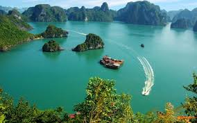
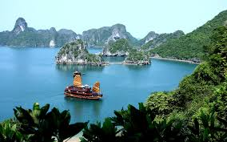

Nằm ở bờ Tây của Vịnh Bắc Bộ, bao gồm vùng biển đảo thuộc TP Hạ Long, TP Cẩm Phả và một phần của huyện đảo Vân Đồn, tỉnh Quảng Ninh. Vịnh Hạ Long có bờ biển dài 120 km, diện tích khoảng 1.553 km vuông bao gồm 1.969 hòn đảo lớn nhỏ, phần lớn là đảo đá vôi, trong đó vùng lõi của vịnh có diện tích 335 km vuông quần tụ dày đặc 775 hòn đảo lớn nhỏ.
Không chỉ đẹp bởi cảnh sắc “mây trời sóng nước”, vẻ đẹp nên thơ hay vô số những đảo đá vôi nổi trên mặt nước, Hạ Long còn đem lại cho du khách cảm giác bình yên khi hòa mình vào cảnh vật nơi đây. Được đánh giá là một trong 29 Vịnh đẹp nhất thế giới, cuối tháng 3/2012, tổ chức New Open World cũng đã chính thức công nhận vịnh Hạ Long là một trong bảy kỳ quan thiên nhiên mới của thế giới.
